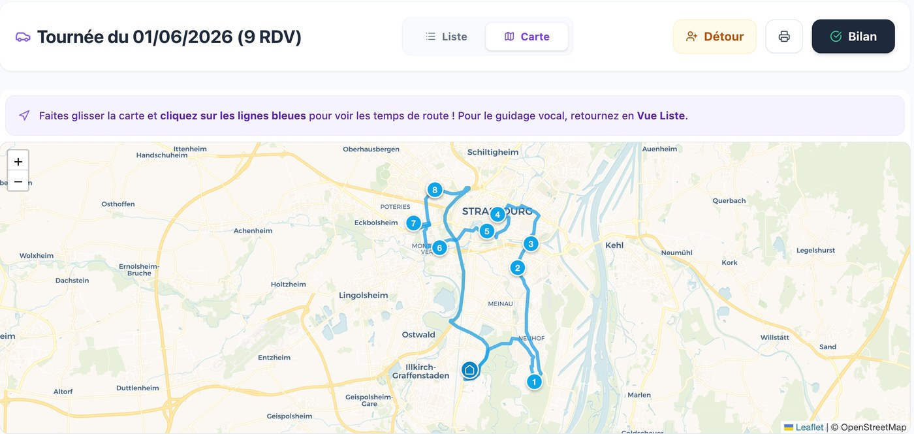
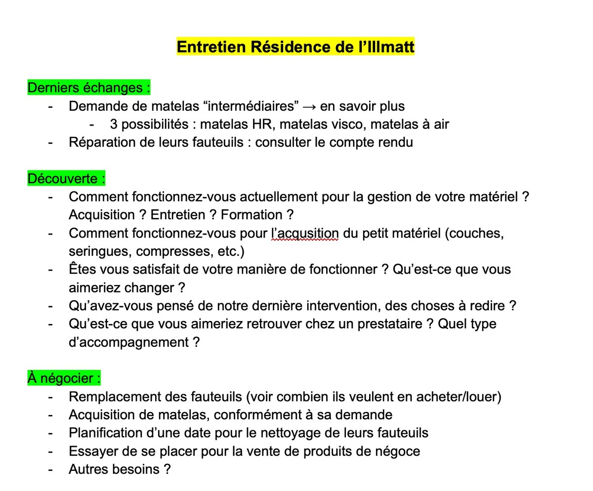

Organisation de tournées
Modéliser des plans de tournée en croisant densité des prospects, trajets et temps estimé pour rationaliser la logistique.
Compétence · Les coulisses
« The path of the righteous salesman… » — préparer, cibler, conclure.
Vendre, c'est comprendre un besoin avant de proposer une solution : écouter, questionner, puis construire une offre qui répond précisément aux attentes du client. C'est un travail de préparation autant que de relation — de la logistique des rendez-vous à la stratégie de négociation — pour transformer une rencontre en engagement durable.
Compétences développées
Au générique de cette compétence — ce que ces réalisations m'ont appris
Modéliser des plans de tournée en croisant densité des prospects, trajets et temps estimé pour rationaliser la logistique.
Maximiser le temps en face-à-face en optimisant chaque déplacement — un pilier de la performance commerciale.
Cerner les enjeux du client à 360° (Fait, Opinion, Changement, Action) avant chaque rendez-vous.
Définir des objectifs millimétrés pour garder le contrôle des éléments négociables et conclure avec assurance.
Le développement de l'entreprise passait par une présence accrue sur le terrain. J'ai donc été chargé de piloter mes propres tournées commerciales. Le défi consistait à concilier volume de visites et qualité des échanges, le tout en gérant mon temps de manière efficace.
En m'appuyant sur les fondamentaux stratégiques étudiés en BUT Techniques de Commercialisation, j'ai modélisé mes propres plans de tournée. J'ai croisé plusieurs variables décisives : densité géographique des prospects, points de départ et d'arrivée, et temps de trajet estimé. La sélection rigoureuse du schéma de tournée m'a permis de rationaliser la logistique pour me concentrer sur l'essentiel : maximiser le temps passé en face-à-face avec les interlocuteurs.
J'ai transformé des connaissances théoriques en une véritable mécanique de vente sur le terrain. Au-delà des techniques de négociation, j'ai forgé une solide compétence en gestion du temps et en optimisation de la productivité, deux piliers indispensables pour performer dans n'importe quel rôle commercial.

La réussite d'un rendez-vous commercial se joue bien avant la première poignée de main. Pour assurer le succès de mes entretiens chez Davicar, j'ai systématisé la création de plans de découverte et de briefs de négociation. L'objectif était d'arriver face au décideur avec une grille de lecture claire de ses enjeux et de mes leviers de vente.
Pour structurer ces échanges, j'ai capitalisé sur mes trois années d'expertise en BUT TC et sur les techniques éprouvées lors des concours nationaux de négociation. J'ai élaboré un plan de découverte rigoureux fondé sur la méthode FOCA (Fait, Opinion, Changement, Action) pour cerner les intentions du client à 360°. En parallèle, la définition millimétrée de mes propres objectifs m'a permis d'aborder chaque phase de discussion avec une stratégie claire et maîtrisée.
L'application rigoureuse de ces méthodes a définitivement ancré mon aisance en entretien. J'ai acquis la certitude que la préparation est le véritable secret pour garder le contrôle des éléments négociables, instaurer un climat de confiance et conclure des ventes avec assurance.
